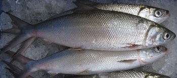

Ikan bandeng (Chanos chanos) adalah ikan pangan populer di Asia Tenggara. Ikan ini merupakan satu-satunya spesies yang masih ada dalam suku Chanidae (bersama enam genus tambahan yang dilaporkan pernah ada namun sudah punah)[1]. Dalam bahasa Bugis dan Makassar dikenal sebagai ikan bolu, dan dalam bahasa Inggris milkfish).
Mereka hidup di Samudera Hindia dan Samudera Pasifik dan cenderung berkawanan di sekitar pesisir dan pulau-pulau dengan terumbu koral. Ikan yang muda dan baru menetas hidup di laut selama 2–3 minggu, lalu berpindah ke rawa-rawa bakau berair payau, dan kadangkala danau-danau berair asin. Bandeng baru kembali ke laut kalau sudah dewasa dan bisa berkembang biak.
Ikan muda disebut nener (IPA : nənər ) dikumpulkan orang dari sungai-sungai dan dibesarkan di tambak-tambak. Di sana mereka bisa diberi makanan apa saja dan tumbuh dengan cepat. Setelah cukup besar (biasanya sekitar 25–30 cm) bandeng dijual dalam keadaan segar atau sudah dibekukan. Bandeng diolah dengan cara digoreng, dibakar, dikukus, dipindang, atau diasap.